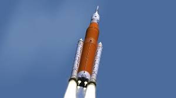
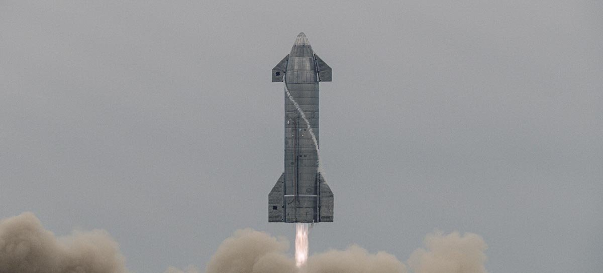

O Falcon 9 (Falcão 9) é um foguete de dois estágios projetado e construído pela SpaceX no Estados Unidos. É movido pelos motores Merlin, também desenvolvidos pela SpaceX, queimando oxigênio líquido (LOX) e querosene refinado (RP-1) como propelentes.

O Saturno 5 ou Saturn V, foi um foguete americano usado nas missões Apollo e Skylab. Foi desenvolvido por Wernher von Braun no Marshall Space Flight Center em Huntsville, Alabama juntamente com Boeing, North American Aviation, Douglas Aircraft Company sob coordenação da IBM. Ele possui três estágios, propelido pelos cinco poderosos motores F-1 do primeiro estágio, e por 6 motores J-2 dos estágios seguintes (5 deles no segundo estágio e 1 no terceiro estágio).
Os três estágios do foguete, chamados S-IC, S-II e S-IVB, usavam oxigénio líquido como oxidante. O primeiro estágio usava RP-1 como combustível, enquanto os segundo e terceiro usavam hidrogénio líquido.
Um total de 15 veículos foram fabricados, além de 3 outros com propósitos de teste. O foguete foi lançado 13 vezes no Centro Espacial John F. Kennedy, na Flórida, sem nenhuma perda de carga ou tripulação. Em 2022, continua a ser o mais alto, mais pesado e mais potente (em termos de impulso total) foguete já operado, detendo ainda o recorde de maior e mais pesada carga útil já lançada à órbita terrestre baixa. Seu último vôo lançou em órbita o laboratório espacial Skylab

O Space Launch System, ou simplesmente SLS, (em português Sistema de Lançamento Espacial) é o projeto de um veículo de lançamento descartável de grande porte de origem norte-americana. Ele se seguiu ao cancelamento do Projeto Constellation e deve, entre outras funções, executar algumas atividades antes executadas pelo Ônibus Espacial, que foi retirado de serviço.
Ele é uma das alternativas da NASA para a criação de veículos derivados do Ônibus Espacial, transformando os projetos do Ares I e do Ares V em um único veículo, utilizável para o transporte de carga e tripulação. A NASA planeja ampliar o SLS para uma capacidade de carga de 130 toneladas (órbita baixa).

O autocarro espacial ou vaivém espacial (em inglês: Space Shuttle) foi um sofisticado veículo parcialmente reutilizável usado pela NASA como veículo lançador de satélites, nave para suas missões tripuladas de reparos de aparelhos em órbita no espaço e reabastecimento da Estação Espacial Internacional. Ele tornou-se o sucessor da nave Apollo usada durante o Projeto Apollo. O ônibus espacial foi lançado pela primeira vez em 1981 e realizou sua última missão em 2011. Eles foram usados em um total de 135 missões desde 1981 até 2011, todos sendo lançados do Centro Espacial John F. Kennedy, na Flórida. Nas suas missões foram lançados inúmeros satélites, sondas interplanetárias, e o Telescópio espacial Hubble; também realizou experimentos científicos em órbita e participou da construção e manutenção da Estação Espacial Internacional. No tempo total, a frota de ônibus realizou 1 322 dias, 19 horas, 21 minutos e 23 segundos de missões espaciais.

A Starship é um foguete e espaçonave financiado pela iniciativa privada composto de um veículo de lançamento e espaçonave completamente reutilizáveis de próxima geração em desenvolvimento pela SpaceX. Ele foi anunciado por Elon Musk, em setembro de 2019. A arquitetura completa do veículo inclui ambos veículos de lançamento e espaçonave que se destinam a substituir completamente todos o hardware espacial da SpaceX no início da década de 2020, bem como a infra-estrutura terrestre para o rápido lançamento e relançamento, e tecnologia de transferência de combustíveis em gravidade zero, para ser implantado em órbita baixa da Terra (LEO). A grande carga útil para a órbita da Terra é de até de 150.000kg o que faz Starship um super heavy-lift veículo de lançamento.A fabricação do primeiro protótipo de upper stage/espaçonave começou no início de 2019, e a nave começou a ser testada também no final de 2019.